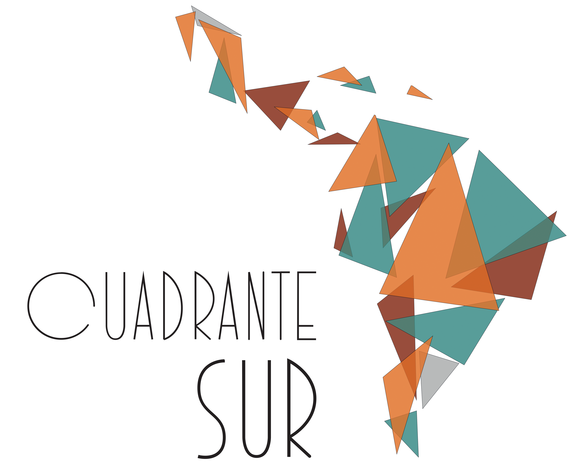

<div class="layout-container">
    <nz-layout>
        <nz-sider nzCollapsible [(nzCollapsed)]="isCollapsed" [nzTrigger]="null">
            <div class="logo">
                
            </div>
            <ul nz-menu nzTheme="dark" nzMode="inline">
                <li nz-menu-item>
                    <i nz-icon nzType="user"></i>
                    <span>Usuario</span>
                </li>
                <li nz-menu-item>
                    <i nz-icon nzType="file"></i>
                    <span>Formulario</span>
                </li>
                <li nz-menu-item>
                    <i nz-icon nzType="search"></i>
                    <span>Busqueda</span>
                </li>
            </ul>
        </nz-sider>
        <nz-layout>
            <nz-header>
                <i *ngIf="!isCollapsed" class="trigger" nz-icon nzType="menu-fold" (click)="isCollapsed = !isCollapsed"></i>
                <i *ngIf="isCollapsed" class="trigger" nz-icon nzType="menu-unfold" (click)="isCollapsed = !isCollapsed"></i>
            </nz-header>
            <nz-content>
                <div class="inner-content">
                    <div class="layout-global-content">
                        <router-outlet></router-outlet>
                    </div>
                </div>
            </nz-content>
            <nz-footer>Cuadrante Sur ©2021 Implement By Octagon Solutions</nz-footer>
        </nz-layout>
    </nz-layout>
</div>